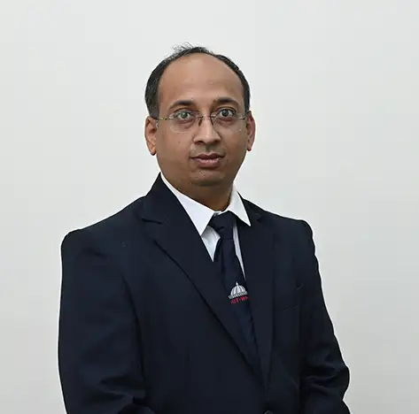

Dr. Shounak Rushikesh Sugave
Associate Professor

Associate Professor
Dr. Shounak Rushikesh Sugave is an Associate Professor in the School of Computer Engineering and Technology at Dr. Vishwanath Karad MIT World Peace University (MIT-WPU), Pune, India. He has over 17 years of experience in academics and industry. Dr. Sugave completed his B.E. in Computer Science and Engineering from Dr. Babasaheb Ambedkar Marathwada University, Aurangabad, India in 2003. He later earned his M.Tech in Network and Internet Engineering from Sri Jayachamarajendra College of Engineering (SJCE), Mysore, under Visvesvaraya Technological University (VTU) in 2005. He obtained his Ph.D. in Software Testing from Jawaharlal Nehru Technological University (JNTU), Anantapur, Andhra Pradesh, India. He has published several research papers in reputed journals and conference proceedings. His research and academic interests include Software Engineering, Software Testing, and Computer Networks. Dr. Sugave is actively involved in teaching, research supervision, curriculum development, and mentoring undergraduate and postgraduate students, contributing to the promotion of industry-relevant skills and research-driven learning.
Profiles